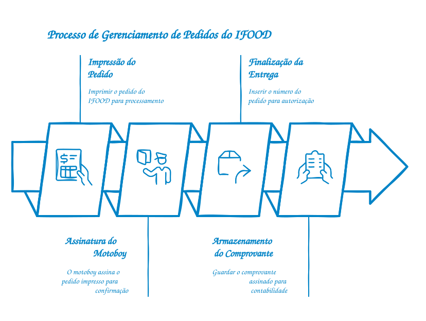

Tudo o que você precisa para conduzir a rotina com segurança.
Este é o seu guia centralizado para todos os procedimentos, rotinas
e informações essenciais da nossa farmácia. O meu objetivo é
garantir que todos tenham acesso rápido e fácil às informações
necessárias para desempenhar suas funções com excelência.
Utilize o menu de navegação à esquerda (ou na parte superior em
dispositivos móveis) para explorar as diferentes seções. Em caso de
dúvidas ou sugestões de melhoria, utilize o canal de feedback quando ele estiver disponível.
Validação institucional pendente.
O conteúdo operacional desta revisão preserva a versão anterior e deve ser homologado pela organização antes de ser adotado como orientação definitiva.
1. Procedimentos de Sistema
Esta seção detalha os passos para a utilização dos sistemas internos
da farmácia, desde a abertura até o fechamento.
1.1. Abertura do Sistema e Login
Guia passo a passo para iniciar o sistema operacional e de vendas
no início do turno.
Ligar o computador e periféricos (impressora, leitor de código
de barras).
Aguardar o carregamento completo do sistema operacional.
Clicar no ícone do sistema PDV na área de trabalho.
Inserir seu usuário e
senha nos campos indicados.
Aguardar o Supervisor inserir o usuário e senha.
Inserir o troco/fundo de caixa como 0.
Em caso de problemas de login, contatar o suporte técnico
imediatamente.
1.2. Vendas e Frente de Caixa
Procedimento padrão para registro de vendas, aplicação de descontos manuais e finalização de pagamentos.
Bipar os produtos conferindo sempre a quantidade e dosagem na tela.
Perguntar se o cliente possui cadastro na loja ou convênio antes de totalizar.
Para pagamentos em dinheiro, sempre confirmar o troco antes de fechar a gaveta.
Em caso de erro no registro, chamar imediatamente o farmacêutico/gerente para estorno.
Lembrete de Segurança: Nunca deixe o terminal do caixa
desbloqueado ao se afastar.
1.3. Convênios e PBM (Programas de Desconto)
Fluxo para autorização de descontos via laboratórios e planos de saúde corporativos.
Solicitar o CPF do cliente ou a carteirinha do convênio (física ou digital).
Pressionar a tecla de atalho de Convênios (ex: F8 ou CTRL+P).
Selecionar o autorizador correto (Funcional, Vidalink, ePharma, etc.).
Aguardar a autorização online. Se o sistema retornar erro de comunicação, tentar novamente em 1 minuto.
Imprimir o comprovante do PBM e anexar à via da loja.
Dúvidas sobre regras específicas de algum laboratório? Consulte a pasta física no balcão principal.
1.4. Finalizar Entregas
Procedimento para realizar o fechamento das entregas, criação de romaneio, devolução de entrega e afins.
CTRL + F3 para criar o romaneio das entregas.
Após aparecer o MENU você deve informar o número da venda que será criado o romaneio, se não souber qual é, ele é mostrado no CTRL + F5.
CTRL + F4 para selecionar qual o romaneio irá ser dado baixa.
O número do romaneio pode ser consultado no papel que foi impresso no primeiro passo e também através do CTRL + F5.
Devolução
Caso a entrega não tenha sido feita, não há necessidade de colocar valor algum, apenas informar D (devolução) para o produto voltar para a loja.
Procedimentos Específicos
IFOOD e FARMÁCIAS APP
Requerem procedimentos específicos, então foram criados tópicos somente para eles.
Atenção à finalização das entregas e a autorização de cada uma.
1.5. IFOOD
Instruções para como lidar com o sistema de pedidos do IFOOD.
Importante ressaltar que detalhes como "como separo o ifood no balcão" não serão mencionados, pois presumo
que isso já foi ensinado em loja".
O pedido do Ifood deve ser impresso.
Quando o motoboy for levar a entrega ele deve assinar o papel que foi impresso do pedido.
Na finalização de entrega como Ifood é necessário informar o número do pedido do Ifood como autorização.
O comprovante do pedido assinado pelo motoboy deve ser guardado junto ao fechamento do caixa.

1.6. Farmácias APP
Instruções para como lidar com o sistema de pedidos do Farmácias APP.
Importante ressaltar que detalhes como "como separo o Farmácias APP no balcão" não serão mencionados, pois
presumo que isso já foi ensinado em loja".
O pedido do Farmácias APP deve ser impresso.
Quando o motoboy for levar a entrega ele deve assinar o papel que foi impresso do pedido.
Na finalização de entrega como Farmácias APP é necessário informar a sequência de letras e números do
pedido do Farmácias APP como autorização.
O comprovante do pedido assinado pelo motoboy deve ser guardado junto ao fechamento do caixa.
1.7. Fechamento do Caixa
Passos para o fechamento diário do caixa e conciliação de valores.
Contar o dinheiro físico no caixa.
Verificar os comprovantes de cartão, pix, ifood, convênios e farmácias app.
Fazer a sangria de todo o valor que não seja o fundo do caixa.
Registrar quaisquer divergências e reportar ao gerente.
Gerar o relatório de fechamento do caixa.
O fechamento deve ser feito com atenção redobrada para evitar
erros.
2. Rotinas Operacionais
Esta seção descreve as rotinas diárias e periódicas para a
manutenção da farmácia e o atendimento ao cliente.
2.1. Recebimento e Conferência de Mercadorias
Procedimento para receber, conferir e armazenar produtos dos
fornecedores.
Verificar a integridade das embalagens no momento da entrega.
Conferir a nota fiscal com os produtos recebidos (quantidade,
tipo, lote, validade).
Separar produtos que necessitam de refrigeração imediatamente.
Armazenar os produtos nos locais designados, seguindo as boas
práticas.
2.2. Organização e Limpeza da Loja
Diretrizes para manter a farmácia limpa, organizada e com produtos
bem expostos.
Importante lembrar que cada pessoa tem sua própria seção da loja para cuidar.
Limpeza diária de balcões, prateleiras e pisos.
Organização dos produtos por categoria e ordem alfabética.
Verificação e reposição de produtos nas gôndolas.
Descarte correto de embalagens e lixo.
Manutenção da área de atendimento ao cliente sempre impecável.
2.3. Atendimento ao Cliente
Boas práticas para um atendimento de excelência, com foco na
satisfação do cliente.
Receber o cliente com um sorriso e saudação.
Ouvir atentamente as necessidades do cliente.
Oferecer informações claras e precisas sobre produtos e
serviços.
Auxiliar na localização de produtos na loja.
Resolver dúvidas e problemas de forma eficiente e cordial.
Agradecer a preferência e convidar a retornar.
Lembre-se: um bom atendimento fideliza o cliente.
2.4. Descarte de Resíduos e Medicamentos Vencidos
Orientações para o descarte correto de lixo comum, recicláveis e
medicamentos vencidos/não utilizados.
Separar o lixo comum do reciclável.
Armazenar medicamentos vencidos em local seguro e separado.
Seguir o protocolo da Vigilância Sanitária para descarte de
medicamentos.
Utilizar os coletores específicos para pilhas e baterias.
Manter a área de descarte limpa e organizada.
O descarte incorreto pode gerar multas e danos ambientais.
3. Documentos Importantes
Aqui você encontrará links e informações sobre documentos
essenciais, como manuais, políticas internas e legislação relevante.
Manual de Boas Práticas de Farmácia (PDF)Disponibilidade aguardando publicação autorizada.
Política de Trocas e DevoluçõesDisponibilidade aguardando publicação autorizada.
Regulamento Interno da FarmáciaDisponibilidade aguardando publicação autorizada.
Legislação sobre Medicamentos Controlados (ANVISA)Disponibilidade aguardando publicação autorizada.
Plano de Contingência e EmergênciaDisponibilidade aguardando publicação autorizada.
Atenção:
Certifique-se de sempre consultar a versão mais atualizada dos
documentos.
4. Perguntas Frequentes (FAQ)
Respostas rápidas para as dúvidas mais comuns do dia a dia. Clique na pergunta para ver a resposta.
O que fazer se a internet da loja cair?
▼
Mantenha a calma. Avise os clientes que o sistema está operando em modo de contingência. Não é possível
passar convênios (PBM) ou cartão sem conexão. Aceite apenas dinheiro ou Pix (se o cliente tiver 3G) e
anote os itens vendidos para dar baixa depois. Acione o suporte de TI imediatamente.
Cliente quer devolver um medicamento. É permitido?
▼
Por determinação da ANVISA, medicamentos (especialmente controlados e antibióticos) não podem ser trocados
ou devolvidos após a saída da loja, por questões de segurança sanitária. Apenas produtos de perfumaria
podem ser trocados (com cupom fiscal).
5. Contato e Suporte
Canais autorizados pela organização.
Participação voluntária
Avalie este Guia
O formulário externo não coleta respostas nesta aplicação. Consulte as condições do formulário antes de enviar.